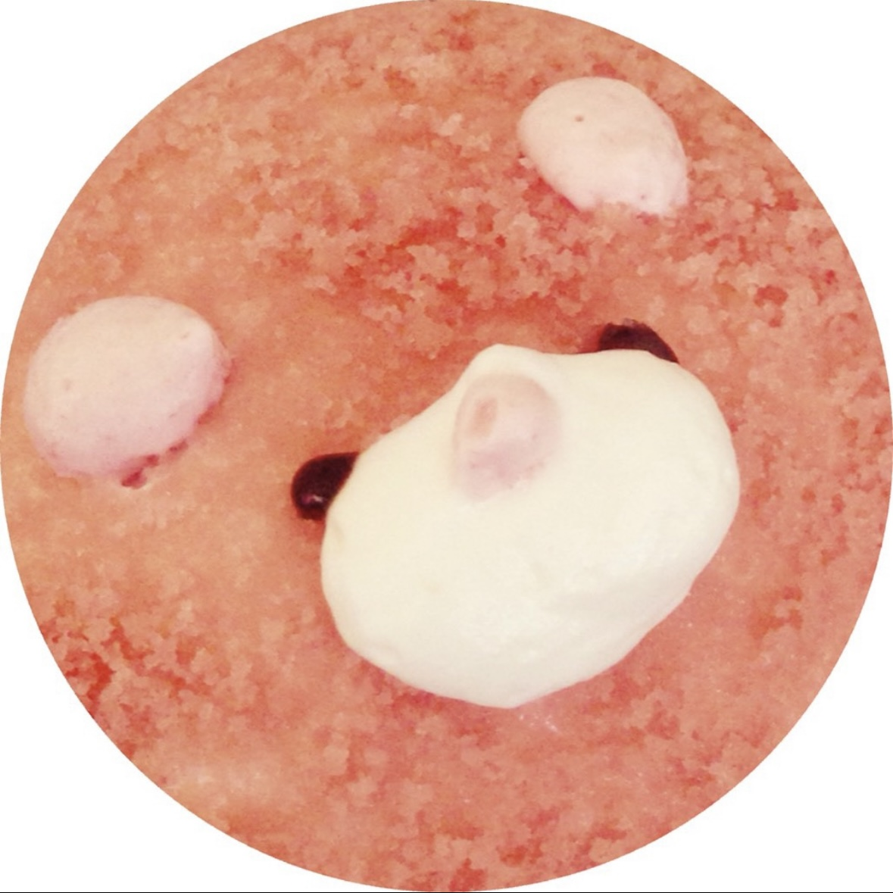

主婦学生です
生活系記事執筆・チラシ・バナー作成などができます
| OS | Mac |
|---|---|
| Tool, Design | ClipStudio, Canva など |
| 資格・免許 | 整理収納アドバイザー1級 薬膳マイスター アロマテラピーアドバイザー ハーブコーディネーター ITパスポート 英検2級 漢検2級 |
アピールできる活動内容を書きましょう。
連絡先や SNS のアカウントを書きましょう。
学歴、職歴、アルバイト、インターン経験など。
| 2019 年 | 株式会社ドワンゴ 入社 |
|---|---|
| 2018 年 | 学校法人角川ドワンゴ学園 N高等学校 卒業 |
| 20XX 年 | 表彰、受賞歴、メディア掲載記事などあれば |